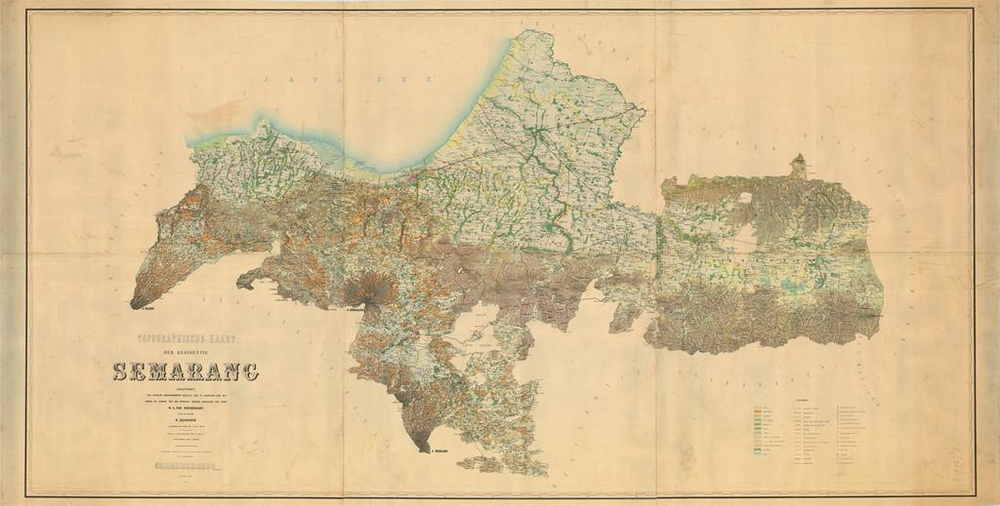
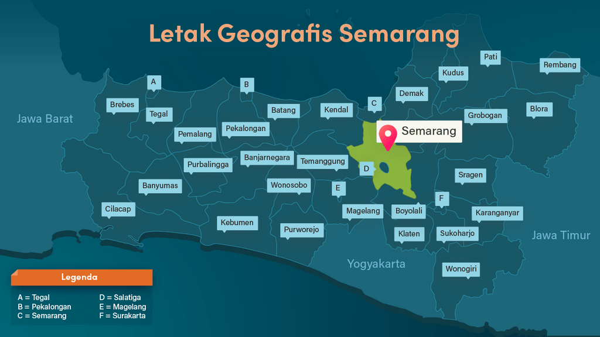
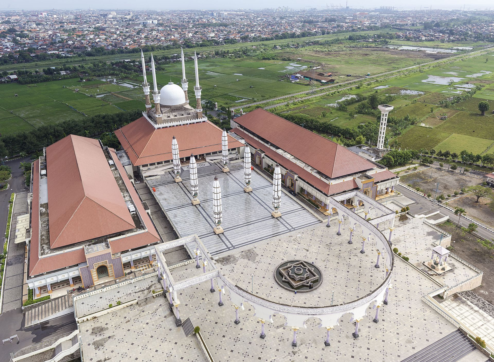
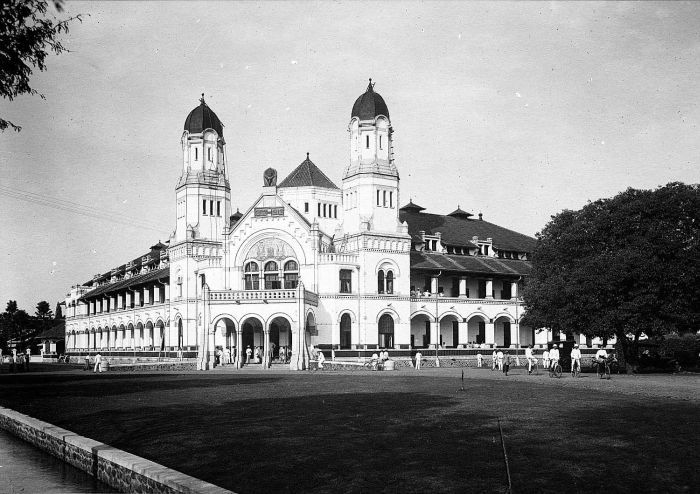

SEJARAH

Sejarah Semarang berawal kurang lebih pada abad ke-6 M, yaitu daerah pesisir yang bernama Pragota
(sekarang menjadi Bergota) dan merupakan bagian dari kerajaan Mataram Kuno. Daerah tersebut pada masa
itu merupakan pelabuhan dan di depannya terdapat gugusan pulau-pulau kecil. Akibat pengendapan, yang
hingga sekarang masih terus berlangsung, gugusan tersebut sekarang menyatu membentuk daratan.
Bagian kota Semarang Bawah yang dikenal sekarang ini dengan demikian dahulu merupakan laut. Pelabuhan
tersebut diperkirakan berada di daerah Pasar Bulu sekarang dan memanjang masuk ke Pelabuhan Simongan,
tempat armada Laksamana Cheng Ho bersandar pada tahun 1435 M. Di tempat pendaratannya, Laksamana Cheng
Ho mendirikan kelenteng dan masjid yang sampai sekarang masih dikunjungi dan disebut Kelenteng Sam Po
Kong (Gedung Batu).
GEOGRAFIS

Kota Semarang adalah salah satu kota penting yang terletak di pesisir utara Jawa dan sebagai hub utama
penghubung Jakarta–Surabaya dan kota–kota di pedalaman selatan Jawa (Surakarta dan Yogyakarta). Kota
Semarang memiliki ketinggian dari 2 meter bawah permukaan laut hingga 340 meter di atas permukaan laut
dengan kemiringan lereng 0%–45%. Kota Semarang merupakan kota yang memiliki kondisi topografi yang unik
berupa wilayah dataran rendah yang sempit dan wilayah perbukitan yang memanjang dari sisi barat hingga
sisi timur Kota Semarang. Wilayah dataran rendah di Kota Semarang sangat sempit.
WISATA
Sejak dibukanya Jalan Tol Cipularang, kota Bandung telah menjadi tujuan utama dalam
menikmati liburan akhir pekan, terutama dari masyarakat yang berasal dari Jakarta
sekitarnya.
Masjid Agung Jawa Tengah

Masjid Agung Jawa Tengah dirancang dalam gaya arsitektural campuran Jawa, Arab, dan Romawi.
Museum Lawang Sewu

Museum dan galeri sejarah perkeretaapian oleh Unit Pusat Pelestarian dan Desain Arsitektur dioperasikan KAI Wisata.
GPIB Immanuel Semarang

Gereja Kristen tertua di Jawa Tengah yang dibangun oleh masyarakat Belanda yang tinggal di kota itu pada 1753